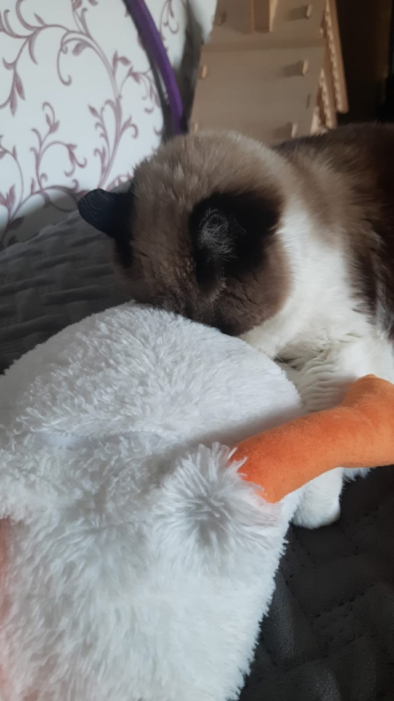

Моя самая любимая кошка. Навсегда!
27 апреля не стало моего любимого домашнего животного, я бы даже сказал члена семьи - моей кошки Лисы. Совсем чуть чуть не успел, чтобы увидеть её спустя год разлуки, надеюсь она попала в лучший кошачий рай, если это можно так назвать. Прощай Лиса...(Лучшая кошка навсегда!)
